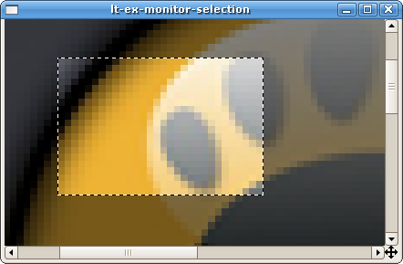
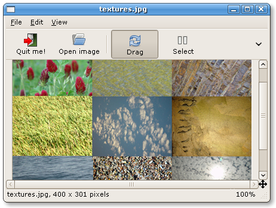

GtkImageView Reference Manual
API reference
Table of Contents
GtkAnimView
— Subclass of
GtkImageView
capable of playing GIF animations.
GtkIImageTool
— Interface for objects capable of being used as tools by
GtkImageView
GtkImageNav
— Navigation window showing a thumbnailed overview of a
GtkImageView.
Screenshot of an active navigation window
GtkImageScrollWin
— Scrollable window suitable for
GtkImageView
GtkImageToolDragger
— Default image tool for paning the image
GtkImageToolSelector
— Image tool for selecting rectangular regions

Screenshot showing a GtkImageToolSelector with an active selection on a GtkImageView
GtkImageView
— General purpose image viewer for Gtk+

Screenshot of the
./tests/interactive
demo application
gdkpixbufdrawcache
— Cache for drawing scaled pixbufs
gtkzooms
— Functions for dealing with zoom factors
This is the API reference for GtkImageView.